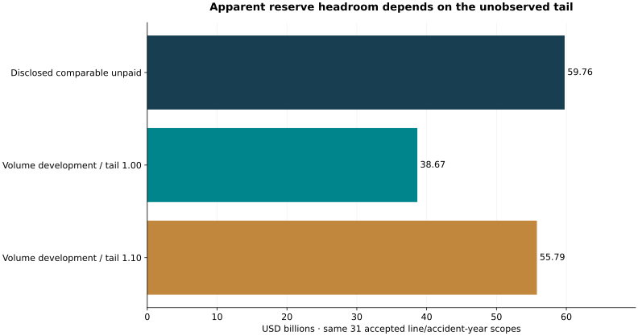

Observed evidence
The source audit retains 4,046 paid/incurred cells from six 2025 insurer filings. Of 48 disclosed triangles, 31 meet the selected development gates.
Decision implication
The default modeled comparable unpaid balance is $38.67bn, versus $59.76bn disclosed for the same accepted scopes. A 1.10 tail factor adds $17.12bn. Treat the gap as model-risk evidence, not excess capital.
Validation and uncertainty
Across 468 masked one-step cells, development WAPE is 14.54% versus 44.50% for repeating the latest increment. The current-disclosure cohort and revised historical values prevent an as-released forecasting claim.
Financial evidence

No release authorization: different methods, development horizons, economic conditions and unallocated/older claims can change the interpretation.
| Issuer / line | Disclosed unpaid | Volume model | Tail 1.10 increment |
|---|---|---|---|
| TRV / Automobile / Personal Insurance | $4,074,000,000 | $3,042,659,313 | $2,214,765,931 |
| TRV / Property And Casualty Personal Insurance Product Line / Personal Insurance | $2,600,000,000 | $1,851,307,512 | $2,180,730,751 |
| TRV / Commercial Multi Peril / Business And International Insurance | $5,873,000,000 | $4,294,421,180 | $2,156,242,118 |
| TRV / Workers Compensation / Business And International Insurance | $9,295,000,000 | $3,333,818,509 | $1,625,681,851 |
| TRV / General Liability / Business And International Insurance | $8,982,000,000 | $5,893,679,524 | $1,510,867,952 |
| TRV / Automobile / Business And International Insurance | $5,141,000,000 | $3,041,203,387 | $922,620,339 |
| TRV / General Liability / Bond And Specialty Insurance | $2,899,000,000 | $2,708,263,035 | $721,726,303 |
| CINF / Commercial Casualty Segment / Commercial Lines Insurance | $3,488,000,000 | $2,144,387,369 | $630,938,737 |
| TRV / Property / Business And International Insurance | $1,190,000,000 | $787,388,396 | $621,738,840 |
| SIGI / Commercial Automobile / Standard Commercial Lines | $1,320,094,000 | $1,194,652,696 | $496,599,570 |
| THG / Commercial Multiple Peril Line | $1,331,000,000 | $1,065,269,264 | $464,566,926 |
| SIGI / General Liability / Standard Commercial Lines | $2,689,310,000 | $2,053,751,884 | $425,799,588 |
Limits and adoption gates
Net allocated-claim scope; different line/accident-year horizons; omitted older claims and unallocated expenses; sparse oldest development factors; potential inflation, settlement and reinsurance changes; no independent actuarial review. Historical triangle columns may be unaudited supplemental disclosure. Predictive and capital-release promotion remain false.